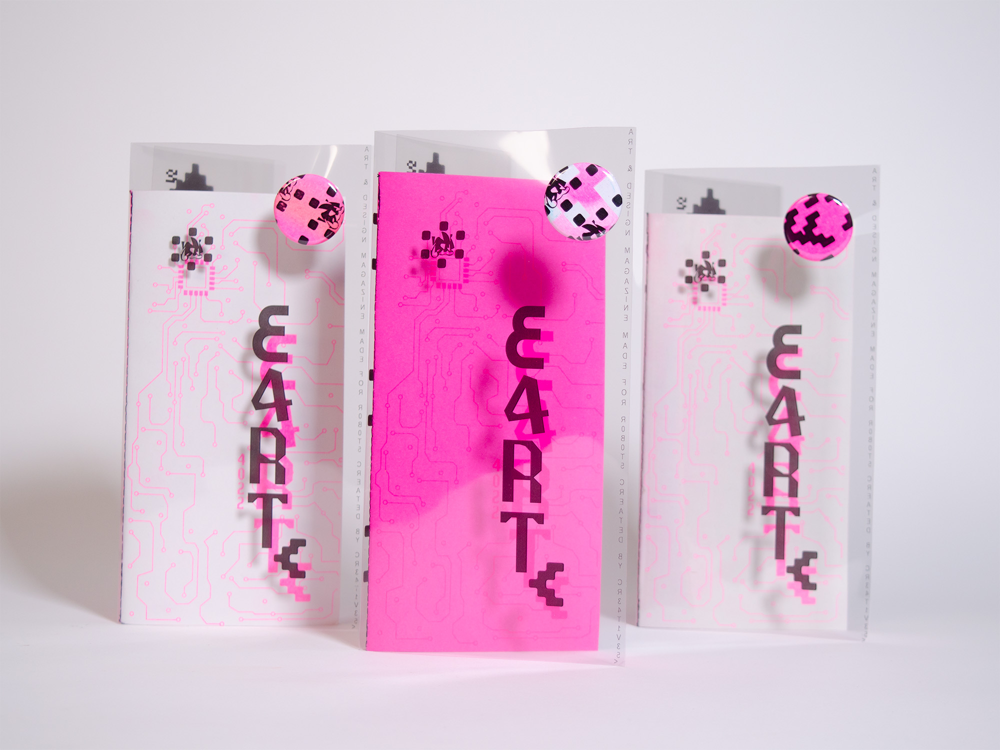
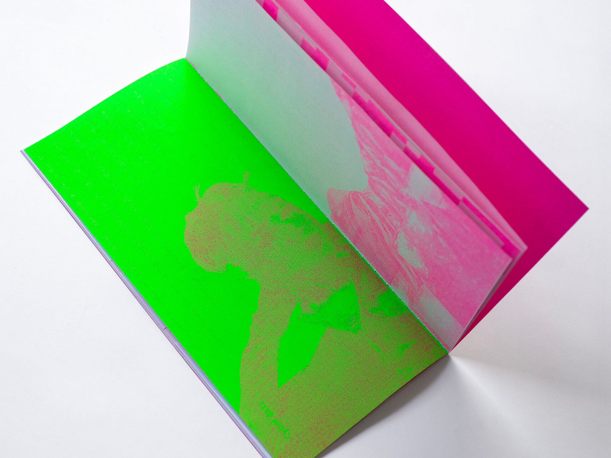
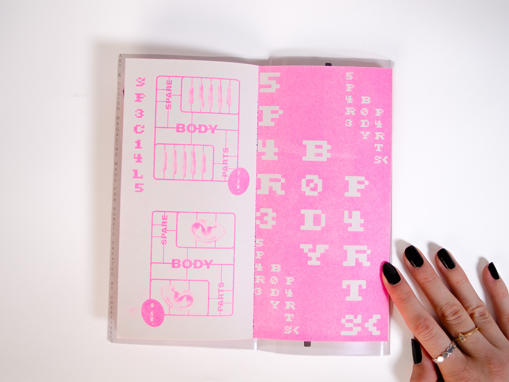
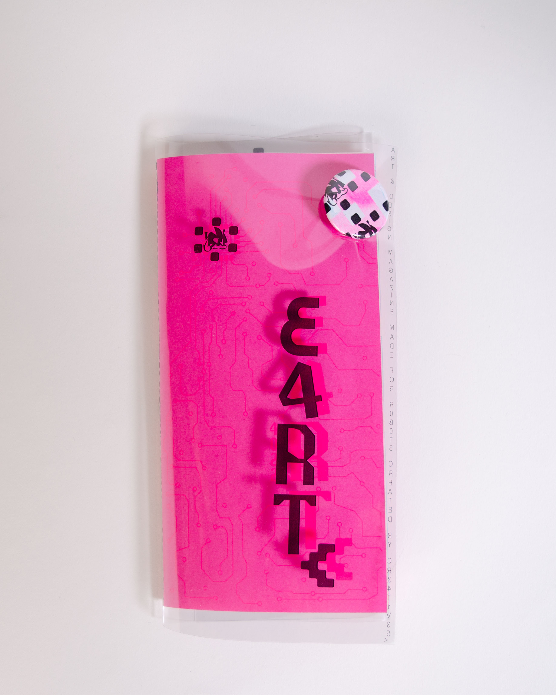
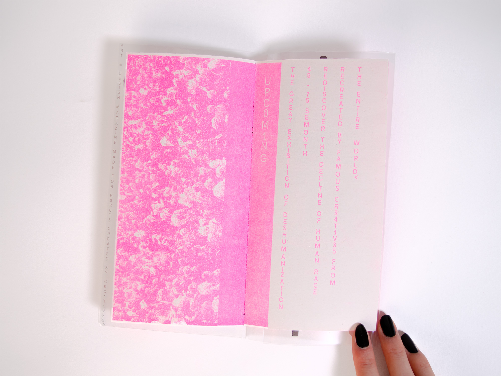

Eart
édition
Dans un lointain futur dystopique, les humains sont devenus inférieurs aux robots et seuls subsistent les créatifs, le seul domaine inaccessible aux robots.
« Art & design magazine made for robots created by creatives ».
In a distant dystopian future, humans have become inferior to robots and only the creative ones remain, the only domain inaccessible to robots.
« Art & design magazine made for robots created by creatives ».
Objectif : créer une revue provenant d’un futur dystopique.
Contrainte : risographie monochrome.
Réalisé avec Laya Hoffmann et Justine Brouillard dans le cadre d’un workshop risographie avec le designer graphique Hadrien Herzog.
The aim was to create a magazine from a dystopian future.
The constraints were to only use risograph printing and monochrome.
Created with Laya Hoffmann and Justine Brouillard as part of a risograph workshop with the graphic designerHadrien Herzog.


Entre interviews, articles et publicités ciblées, les humains vulgarisent l’art et le design à l’intention des robots. Ex: interview de la chanteuse Solene.
La composition est verticalisée, mode de lecture optimisé dans ce monde.
With interviews, articles and targeted advertisements, humans popularize art and design for the benefit of robots. An example is interviewing Solene, a singer. The composition is verticalized, optimized reading mode in this world.


EART< est une combinaison et contraction de « heart » et « Earth » * et « < » autant une référence au codage informatique que le rappel cauchemardesque de l’infériorité humaine sur la technologie dans ce contexte dystopique. * « cœur » et « Terre ».
EART< is a combination and contraction of "heart" and "Earth" and " < " that is as much a reference to computer coding as it is a nightmarish reminder of human inferiority over technology in this dystopian context.


